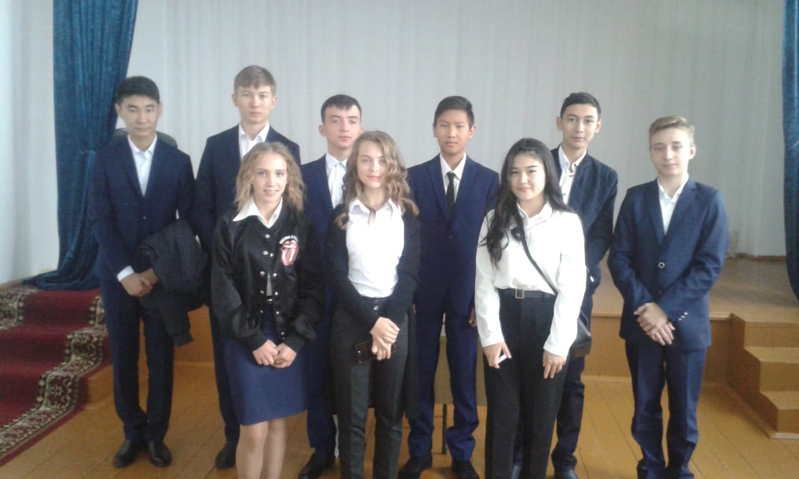

Ça fait 11 ans. C'est au tour de notre classe de sortir à l'âge adulte. Pendant tout ce temps, les enseignants nous ont donné leur affection, leur gentillesse, leur connaissance. Nous leur en sommes très reconnaissants. Ils nous ont élevés, nous ont rendus plus forts, nous ont aidés à surmonter les difficultés. Et nous admirons qu'ils, malgré tout, ils ont fait leur devoir avec courage. L'école ne nous a pas seulement donné des connaissances. Elle a donné une expérience de vie non remplaçable. Elle nous préparait pour une nouvelle vie intéressante, en tant que mère attentionnée et gentille, n'exigeant rien en retour. L'école a passé les meilleures années de notre vie – c'est la jeunesse. Ici, nous avons ouvert notre monde intérieur, connu notre Moi intérieur. L'école est notre deuxième maison et à chaque fois, nous viendrons ici avec le sourire et la bonne humeur. Nous n'oublierons pas notre école!

L'examen National unique est un système d'évaluation des connaissances dans cinq matières, dont les résultats sont utilisés comme examens d'entrée dans les établissements d'enseignement supérieur de la République du Kazakhstan. En 2020, les tests auront lieu pour la 17ème fois. UNT n'est pas obligatoire pour tout le monde. Les diplômés qui n'ont pas l'intention d'entrer dans les Universités du Kazakhstan, mais choisissent le collège, l'enseignement secondaire spécialisé, ne s'inscrivent pas du tout cette année ou s'inscrivent dans des universités d'autres pays, ne peuvent pas passer les tests.
LireLe logiciel développé par les entreprises d'Almaty identifie la pneumonie et les signes du coronavirus Dans l'épicentre du Coronavirus du Kazakhstan, la ville d'Almaty, un groupe de médecins utilise un logiciel utilisant l'Intelligence Artificielle (IA).
Lire